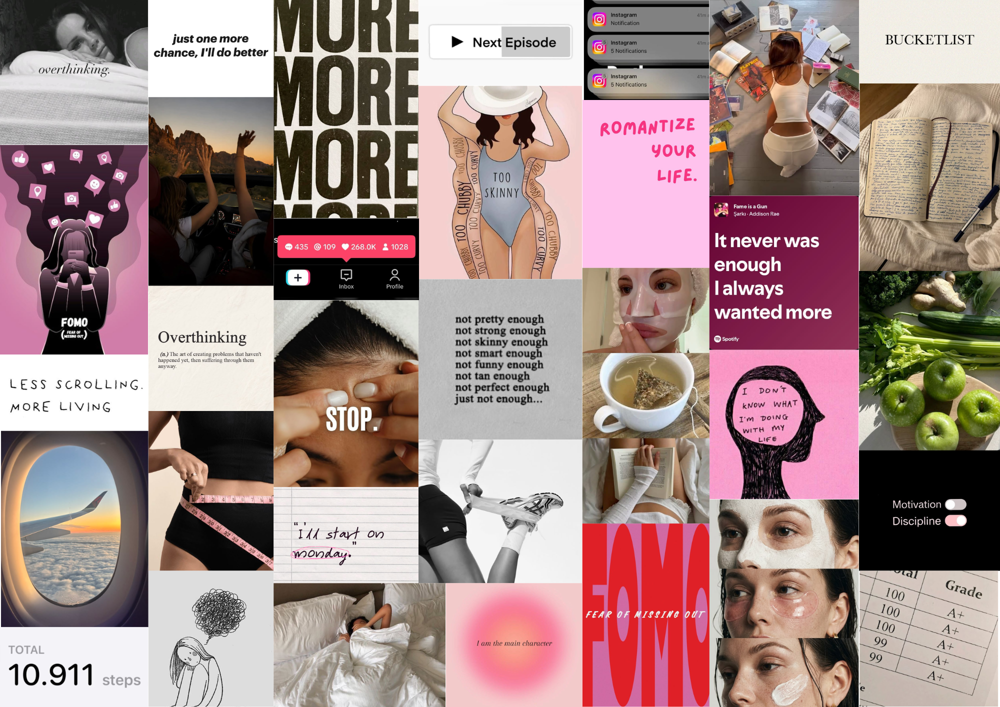

class: center, middle <!-- In deze textarea kan je in Markdown de slides aanpassen, zie https://github.com/gnab/remark/wiki voor alle mogelijkheden! --> # NEVER<br>ENOUGH. ### Waarom voelt genoeg soms niet als genoeg? --- # 01 — Het onderwerp ## “Never Enough” Waarom hebben we zo vaak het gevoel dat we meer moeten? Ik wil onderzoeken waarom we als mensen vaak het gevoel hebben dat iets nooit helemaal genoeg is. We willen steeds meer, beter, mooier, productiever of interessanter, terwijl we eigenlijk al genoeg hebben. --- class: center, middle, pink-bg # DE THEMA's ### Our Minds. ### Our Bodies. ### Our Live. ### Online. --- # 02 — Mijn 10 links 1. [LINK 01 — <a href="https://www.bedrock.nl/positieve-kanten-van-overthinking/">Positieve-kanten-van-overthinking</a>](#) 2. [LINK 02 — <a href="https://www.bedrock.nl/altijd-meer-willen/">Altijd-meer-willen</a>](#) 3. [LINK 03 — <a href="https://scientias.nl/waarom-we-altijd-meer-willen-zelfs-als-we-er-ongelukkig-van-worden/">Waarom we altijd meer willen zelfs als we er ongelukkig van worden</a>](#) 4. [LINK 04 — <a href="https://psycholoog.nl/blogs/wat-is-de-invloed-van-doomscrolling-op-je-geestelijke-gezondheid/">Doomscrolling en de invloed op je geest</a>](#) 5. [LINK 05 — <a href="https://moodspace.be/nl/infotheek/fear-missing-out">Fear of missing out</a>](#) 6. [LINK 06 — <a href="https://www.brainwash.nl/artikelen/waarom-we-altijd-zo-druk-zijn">Waarom we altijd zo druk zijn</a>](#) 7. [LINK 07 — <a href="https://www.trimbos.nl/kennis/digitale-media-gokken/expertisecentrum-digitalisering-en-welzijn/sociale-media-en-welzijn/mentale-gezondheid/">Social media en mentale gezondheid</a>](#) 8. [LINK 08 — <a href="https://www.linda.nl/meiden/selflove/linda/hierom-niet-streven-trendy-lichaam/">Waarom je niet moet streven naar een perfect lichaam</a>](#) 9. [LINK 09 — <a href="https://www.sg.uu.nl/agenda/2025/het-gevaar-van-het-main-character-syndrome">Gevaar van het main character syndrome</a>](#) 10. [LINK 10 — <a href="https://www.lizdavistherapy.com/blog/romanticize-your-life">Romanticize your life</a>](#) --- class: black # 03 — Mijn foto collage Ik heb afbeeldingen verzameld die bij mijn onderwerp passen. Toen ik ze naast elkaar legde, zag ik verschillende patronen. ### Wat komt steeds terug? **ROZE** **ZWART** **SOCIAL MEDIA** **VROUWELIJK** **PRESTEREN** **GROOT** **OVERTHINKING** **FOMO** **ZELFVERBETERING** --- class: pink-bg <p></p> --- # 04 — Mijn digital garden In mijn digital garden wil ik verschillende kanten van Never Enough onderzoeken. Niet alleen de negatieve kant, maar ook waarom we zo graag willen groeien, verbeteren en nieuwe dingen ervaren. Het uitgangspunt is de vraag: waarom is genoeg voor ons vaak niet genoeg? Dit zie je op veel manieren terug in het dagelijks leven. We willen steeds meer, beter, mooier of interessanter. Ik wil daarom geen standaard informatieve website maken, maar een website die bezoekers laat nadenken over hun eigen gedrag. De onderwerpen verdeel ik in Our Minds, Our Bodies, Online en Our Lives. Denk hierbij aan FOMO, overthinking, Just One More, glow-up culture, productiviteit en Let’s Romanticize Life. Wat ik interessant vind aan andere websites is wanneer informatie niet meteen volledig wordt gegeven, maar je als bezoeker zelf iets ontdekt. Ik wil daarom experimenteren met scroll-interacties, verborgen informatie, bewegende elementen en verschillende lagen binnen een pagina. Vooral scroll-based animations, interactieve hover states en animaties die reageren op de gebruiker lijken mij interessant om verder te onderzoeken. --- class: center, middle, black # THANK YOU. <!-- Laat onderstaande staan anders breekt je presentatie -->